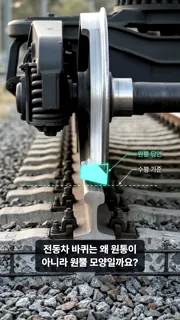
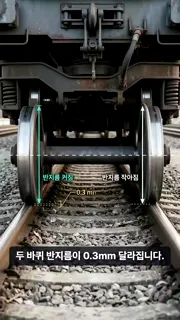
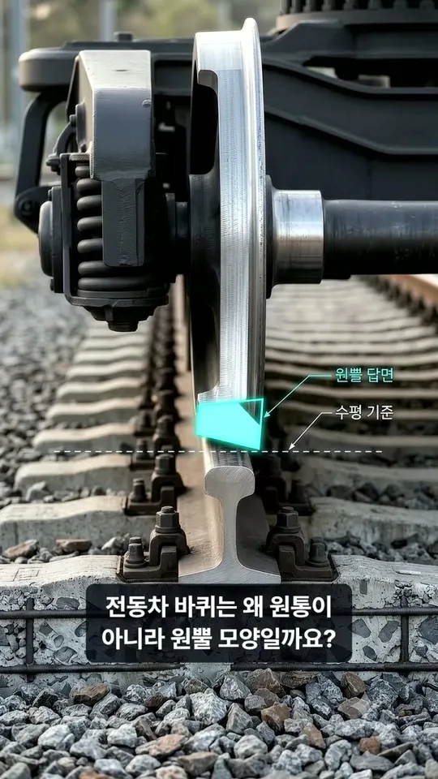
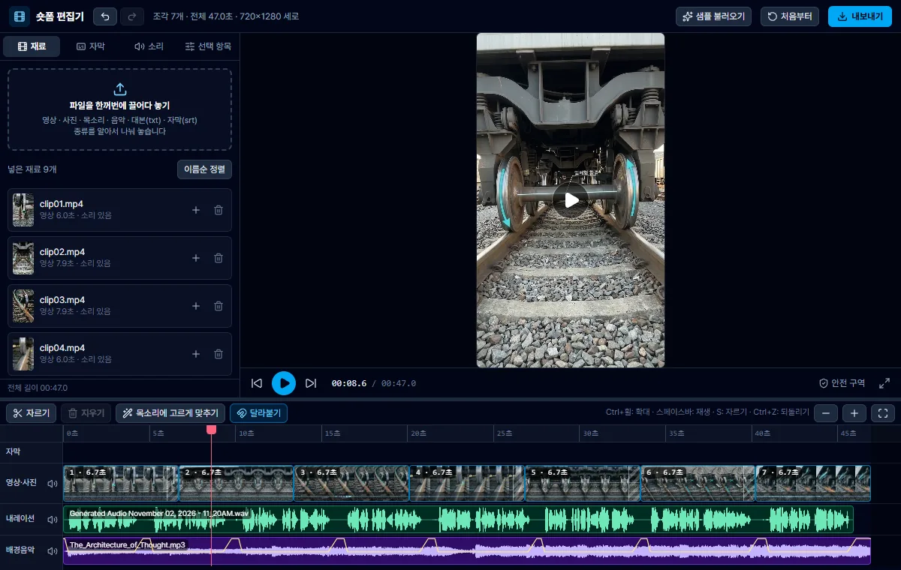
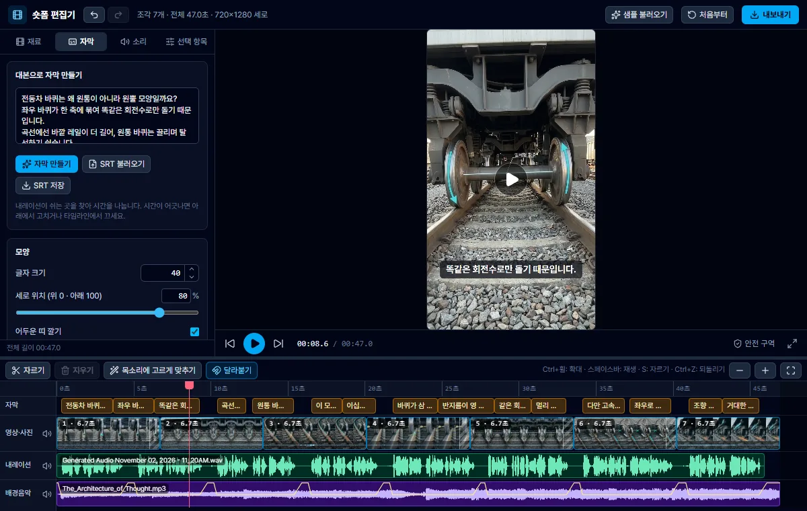
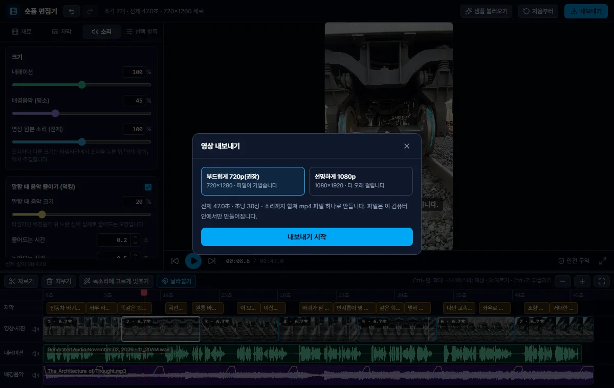

Gemini 노트북 채팅 하나로,
30초~1분 숏폼 한 편
노트북이 단계마다 다음 할 일을 알려 줍니다. 이 페이지는 어느 사이트에서 무엇을 누르고, 무엇을 어디로 옮기는지만 보여 줍니다.
처음부터 따라 하기 ↓만들기는 컴퓨터(Chrome)에서 합니다. 이 페이지는 휴대폰으로 옆에 띄워 두고 보면 편합니다.
안내서를 기억하는 작업방이라, "다음"이라고만 하면 됩니다
안내서를 기억합니다
노트북에 넣은 안내서와 요청 사항을 채팅마다 기억합니다. 매번 처음부터 설명하지 않아도 됩니다.
앞 단계를 이어 씁니다
대본 → 장면표 → 사진 주문이 한 채팅에 남아 있어, "다음"이라고 하면 앞의 결과로 다음 단계를 씁니다. 표나 글을 따로 저장하지 않습니다.
다음 숏폼은 첫 말만
같은 노트북에 첫 말을 다시 쓰면 새 채팅이 열리고 1단계부터 시작합니다. 노트북 준비는 한 번이면 됩니다.
근거: Gemini 도움말 「Create and use notebooks in Gemini Apps」 — 노트북 채팅은 자료와 요청 사항을 기억하고, Gemini 도구를 쓸 수 있습니다 (2026-11-03 열람).
순서는 같고, 주제와 사진이 다릅니다
고르면 이 페이지의 안내가 그 갈래에 맞게 바뀝니다. 위쪽 버튼으로 언제든 바꿀 수 있습니다.
이야기 숏폼
예: 우리 동네 단골 빵집의 이른 아침 · 퇴근길 창밖의 저녁 한강
- 주제
- 내가 본 장면 · 겪은 하루 · 남기고 싶은 감정
- 대본
- 궁금한 첫 줄 → 기대나 어려움 → 풀림 → 마무리 한 마디
- 사진
- 장면마다 한 장 (4~6장)
- 영상 조각
- 사진에서 이어지는 8초 (선택)
- 사실 확인
- 필요 없음
공학 숏폼
예: 전동차 바퀴는 왜 원뿔 모양일까? · 달리던 전동차는 어떻게 멈출까?
- 주제
- "왜 그럴까?" 질문 하나
- 대본
- 질문 → 이대로면 생기는 문제 → 결정적인 설계 → 원리 → 한계
- 사진
- 장면마다 짝 — 「빈 사진」 + 같은 사진에 화살표 · 이름표를 더한 「설명 사진」
- 영상 조각
- 빈 사진에서 시작해 설명 사진에서 끝나는 4초 (선택)
- 사실 확인
- 필수 — 숫자 · 원리는 출처를 직접 엽니다. 조사(Deep Research)는 선택
처음이면 이야기 숏폼이 빠릅니다 — 사진이 절반입니다.
사이트는 넷 — 노트북 · AI Studio · Flow · 편집 앱
노트북 채팅 단계는 Gemini가 바로 결과를 씁니다. 다른 사이트 단계는 Gemini가 붙여 넣을 글을 줍니다 — 그 글을 옮기는 것이 할 일의 대부분입니다.
노트북을 만들고, 안내서와 요청 사항을 넣습니다
- gemini.google.com → 왼쪽 새 노트북
- 이름 쓰기(예: 숏폼 만들기) → 오른쪽 화살표
- 소스 추가 → 텍스트 복사됨아래 「안내서 복사」를 누른 뒤 붙여 넣기 → 텍스트 추가
- 오른쪽 위 ⋮ → 노트북 설정
- 노트북 메모리 사용 끄기 → 요청 사항에 붙여 넣기 → 저장「요청 사항 복사」로 가져갑니다
- 입력창 Gemini에게 물어보기에 첫 말 → 보내기
첫 말 만들기
소스
노트북 설정
첫 말을 보내면 지도와 대본이 바로 나옵니다
- 첫 답 맨 위의 8단계 지도 표 확인
- 첫 줄이 [1/8 · 대본]인지 보고 대본 읽기장면마다 길이 · 감정 · 내레이션 한두 문장네 문장(질문 · 원리 · 보일 흐름 · 특징) + 장면별 대본 + 출처
- 고칠 곳만 말하기예:
S02 문장을 더 짧게·마지막 한 마디를 바꿔 줘 - 마음에 들면
다음
확인할 것
- 처음 3초가 궁금한가
- 문장마다 새 내용이 나오나
- 마지막 한 마디가 남나
- 숫자마다 출처를 내가 열어 봤나 · 한계가 한 줄 있나
조사 결과로 1단계 해 줘. 무료 계정은 붐빌 때 못 쓸 수 있습니다 — 그때는 조사 없이 갑니다.S01 (8초) · 차분함 — 매일 지나던 다리인데, 오늘은 창밖이 조금 달랐습니다.
대본을 AI Studio에 붙여 넣어 목소리를 만듭니다
- 채팅의 코드 블록 오른쪽 위 복사 버튼 누르기코드 블록이 둘 — 읽을 대본 · 말투
- aistudio.google.com/generate-speech → Create new dialog화면은 영어입니다
- 가운데 글 상자에 읽을 대본 붙여 넣기
- Speaker 1 - 이름 ▾ → Search 2,000+ voices에 Enceladus → 누르기
- Style ▾ → Describe the voice style에 말투 붙여 넣기
- 오른쪽 아래 Run → ▶ 듣기 → ⬇ 내려받기
- 채팅으로 돌아와
목소리 길이는 48초야. 다음실제 길이로 장면을 나눕니다
확인할 것
- 발음이 틀린 단어가 없나 — 있으면 채팅에 "○○를 소리 나는 대로 고쳐 줘"
- 장면이 바뀌는 곳에서 쉬나
- 말한 길이 안인가
Create new dialog
Breathy · Lower pitch
실제 목소리 길이로 장면을 나눕니다
- 룩 바이블 읽기 — 모든 사진에 똑같이 붙는 문단빛 · 색 · 주인공 옷차림을 하나로 고정해 사진끼리 같은 영상처럼 보이게 합니다대상의 형상 · 재료 · 빛을 하나로 고정합니다
- 장면표 읽기 — S01부터 장면마다 길이 · 대본 구절 · 화면설명 사진에 넣을 이름표 · 화살표 방향도 함께
- 마음에 들면
다음— Flow에 붙여 넣을 사진 주문이 나옵니다
확인할 것
- 장면이 대본 순서와 맞나
- 사진으로 그릴 수 있는 장면인가
- 같은 장면이 반복되지 않나
화면: 전경 가방끈 · 중경 버스 유리창 · 배경 노을빛 한강 다리
S02 (11초) 노을이 강물 위에 길게 눕고…
화면: 전경 물방울 · 중경 강물 반영 · 배경 빌딩 불빛
Flow 프로젝트 하나에서 장면 사진을 만들고 이름을 붙입니다
- flow.google.com → 새 프로젝트
- 입력창 아래 에이전트가 하얗게 켜져 있으면 눌러 끄기
- 오른쪽 아래 설정 칩 → 이미지 · 9:16 · x2"생성 시 0 크레딧" — 사진은 크레딧을 쓰지 않습니다
- 입력창에 [S01] 사진 주문 붙여 넣기 → 오른쪽 화살표Enter 대신 화살표를 누릅니다
- 두 장 중 마음에 드는 사진의 ⋮ → 이름 바꾸기 →
S01S02 · S03 … 마지막 장면까지 4~5를 되풀이 - 빈 사진 S01의 ⋮ → 프롬프트에 추가 → [S01 설명] 주문 붙여 넣기 → 화살표새 사진의 이름을
S01 설명으로
유리에 비친 얼굴을 지워 줘) → 화살표 → 완료. 고친 사진은 원래 자리에 겹쳐 쌓입니다. 그래서 설명 사진은 6처럼 따로 만듭니다 — 빈 사진을 눌러 고치면 빈 사진이 사라집니다.확인할 것
- 같은 주인공(옷 · 소품) · 같은 빛 방향인가
- 글자 · 로고 · 얼굴(유리에 비친 얼굴 포함)이 없나 · 세로인가
- 설명 사진이 빈 사진과 같은 구도인가 · 화살표 방향이 맞나 · 한글 이름표가 깨지지 않았나 · 아래 4분의 1이 비었나

만든 사진을 「시작」에 넣어 영상 조각을 만들고, 내려받습니다
사진만으로도 영상이 됩니다 — 편집 앱이 사진을 천천히 확대합니다. 크레딧이 남으면 만듭니다.
- 채팅에
다음→ 장면마다 [CLIP] 주문이 나옵니다 - 설정 칩 → 동영상 · 프레임 · 9:16 · Omni 1.1 Flash · 720p · 8초4초 · x1"생성 시 12 크레딧" — 무료는 하루 50, 8초 조각 넷4초는 7 크레딧 — 무료는 하루 50, 조각 일곱
- 입력창 위 시작 → 목록에서
S01→ 프롬프트에 추가「종료」에도S01 설명→ 「프롬프트에 추가」 - [CLIP01] 주문 붙여 넣기 → 오른쪽 화살표 → 1분 남짓다음 장면도 3~4를 되풀이
- 다 만들면 영상의 ⋮ → 다운로드 → 720p 원본 크기영상이 없는 장면은 사진의 「⋮」 → 「다운로드」 → 「1K 원본 크기」
- 파일 이름을 장면 순서로 —
01_S01.mp4·02_S02.png…이름순 = 영상 순서입니다
확인할 것
- 첫 장면이 사진과 같은가
- 카메라가 한 방향으로 천천히 움직이나 · 모양이 녹거나 바뀌지 않나
- 만들기 전에 "생성 시 N 크레딧"을 봤나 — x2면 두 배

S03프레임 이미지 선택
내 주제/
02_S02.png
03_S03.mp4
04_S04.png
narration.wav
같은 채팅에서 「음악 만들기」를 켜고 음악 주문을 붙여 넣습니다
다음→ 음악 주문 코드 블록을 복사- 입력창 + → 음악 만들기
- 입력창 아래 길이 → 짧게 · 보컬 → 연주곡
- 음악 주문 붙여 넣기 → 보내기 → 표지 그림이 나오면 ▶ 듣기
- 표지 그림에 마우스를 올리고 트랙 다운로드 →
bgm끝나면 「+」 → 「음악 만들기」를 눌러 끄고다음
음악 한 단어만 보내면 음악 대신 글만 나옵니다. 꼭 주문 전체를 붙여 넣습니다. 음악이 목소리보다 길어도 됩니다 — 편집 앱이 잘라 쓰고, 말할 때 음악을 줄입니다.확인할 것
- 보컬이 없는 연주곡인가
- 영상의 감정과 어울리나

⬇▶파일을 전부 끌어다 놓고, 자막을 만들고, 내보냅니다
- 편집 앱 열기 → 안내 창이 뜨면 Continue to the app편집 앱 열기 ↗ · "Rate exceeded."가 뜨면 위쪽 새로고침
- 재료 탭에 영상 · 사진 · 목소리 · 음악을 한꺼번에 끌어다 놓기파일 이름 번호 순서로 타임라인에 놓입니다
- 자막 탭에 자막용 대본 붙여 넣기 → 자막 만들기채팅에 "자막용 대본 줘"라고 하면 표시를 뺀 글을 줍니다
- ▶로 끝까지 보기 — 소리 크기는 소리 탭에서
- 내보내기 → 부드럽게 720p(권장) → 내보내기 시작 → 파일 내려받기
확인할 것
- 말과 화면이 같은 내용인가
- 자막이 사진의 중요한 곳을 가리지 않나
- 음악이 목소리를 덮지 않나



This app is from another developer
제목을 받고, 올리기 전에 세 가지를 봅니다
채팅에 다음
추천 제목 하나와 다른 제목 셋, 설명 두세 줄, "AI로 만든 장면 · 목소리 · 음악을 포함합니다" 한 줄, 해시태그를 줍니다. 공학은 "이해를 돕기 위해 일부 현상을 단순화했습니다"도 들어갑니다.
올리기 전 세 가지
- 사실이 맞는가 — 이름 · 숫자 · 장소를 내가 확인했나
- 실제 사람 얼굴 · 유명인 · 남의 음악 · 상표 · 회사 내부 자료가 없나
- AI로 만든 영상임을 밝혔나 — 올리는 곳의 규칙을 따릅니다
같은 노트북에 첫 말만 다시 쓰면 1단계부터 시작합니다
노트북
왼쪽 숏폼 만들기 노트북 → 입력창에 새 주제로 첫 말 → 보내기. 노트북 안에 새 채팅이 생깁니다. 자료와 요청 사항은 그대로입니다.
Flow
홈에서 새 프로젝트를 하나 더 만듭니다. 숏폼 하나 = 프로젝트 하나라야 「시작」 목록이 섞이지 않습니다.
한도를 넘기면 다음 날 같은 채팅과 같은 Flow 프로젝트를 열어 이어서 합니다. 채팅은 노트북 안에, 사진은 프로젝트 안에 남아 있습니다.
회차별 입력 문장 말고, 다시 꺼내 쓸 파일들
자료실은 단체방 공지의 링크로 엽니다. 이 페이지에는 파일 링크를 걸지 않았습니다.
숏폼을 다시 만들 때
- AI마스터스쿨_숏폼안내서.md새 안내서 · 2026-11-03노트북 자료로 넣는 안내서. 이 페이지의 「안내서 복사」와 같은 글입니다.
- 노트북_요청사항.txt새 안내서와 짝노트북 설정의 「요청 사항」에 붙여 넣는 글.
- 8회차_전동차바퀴_완성본.mp4공학 숏폼 완성 예시 46초. 내 영상의 길이 · 자막 · 음악 크기를 비교해 볼 때.
- AI마스터스쿨_공학숏폼가이드.md · AI마스터스쿨_숏폼제작가이드.md이전 버전이전 안내서. 새 안내서로 합쳐졌습니다 — 새로 시작하면 쓰지 않습니다.
- 내 숏폼 재료 한 벌.pdf이전 버전8회차 전 준비물(스킬로 재료 만들기). 지금은 이 페이지 순서를 따릅니다.
소리 · 장면을 따로 연습할 때
- 내 이야기의 소리 한 벌.pdf6회차목소리(AI Studio)와 음악만 연습해 볼 때.
- 내 이야기의 장면 한 벌.pdf7회차룩 바이블로 장면 사진을 맞추고, 사진을 영상으로 움직이는 연습.
발표 자료 · 홍보물을 만들 때
- 다음 발표 하나를 딸깍으로.pdf5회차Gemini Canvas로 발표 슬라이드를 말로 만들고 고쳐 내보내기.
- gemini-skill-슬라이드만들기.txt5회차슬라이드 디자인 규칙을 Gemini 스킬로 넣어 두고 매번 같은 품질로.
- banner-generation-prompt.md70:9 현수막을 이미지 생성으로 만들 때 붙이는 지시문 틀.
받은 지시문을 내 것으로
- 만능 질문 — 받은 것을 내 것으로.txt남이 준 지시문 · 안내서를 Gemini와 말로 주고받으며 내 취향대로 고쳐 받기. 이 안내서에도 쓸 수 있습니다.
앱을 만들고 함께 쓸 때
- 내 앱을 인터넷에.pdf3회차말로 만든 앱을 인터넷 주소로 공개하기(GitHub · Antigravity).
- 마이플레이리스트-배포용.txt3회차앱 만들기 지시문 예시 — 내 앱 의뢰서를 쓸 때 본보기.
- 우리 모임에서 같이 쓰기.pdf4회차정산판처럼 주소 하나로 여럿이 같이 쓰는 앱을 단톡방에서. 휴대폰만 있으면 됩니다.
자료를 주고 묻기 (노트북)
- 2021년도 차량분야 사고 장애 교육자료_수업용.pdf1 · 2회차노트북에 자료로 넣고 원문 쪽수로 답을 확인하는 연습용. 사내 자료이니 밖으로 보내지 않습니다.
- 전동차를_멈춰_세운_1mm_틈새의_연쇄_반응.mp4 · 지하철_19분을_멈춘_1밀리미터의_나비효과.m4a2회차노트북이 자료 하나로 만든 동영상 개요 · 오디오 개요 예시.
PPT 폴더
- [AI마스터스쿨] 1~8회차 슬라이드지난 수업 화면. 버튼 위치를 다시 볼 때.